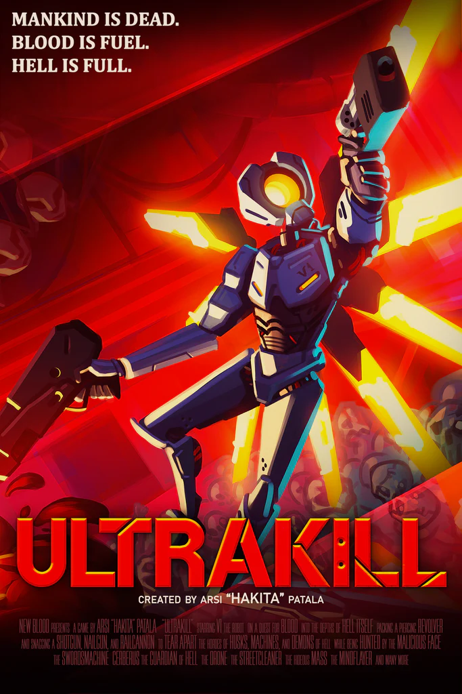

<!DOCTYPE html>
<html lang="es">

</html>

<head>

    <meta charset="UTF-8">
    <meta name="viewport" content="width=device-width, initial-scale=1.0">
    <title>Game Reviews</title>
    <link href="https://cdn.jsdelivr.net/npm/bootstrap@5.3.3/dist/css/bootstrap.min.css" rel="stylesheet"
        integrity="sha384-QWTKZyjpPEjISv5WaRU9OFeRpok6YctnYmDr5pNlyT2bRjXh0JMhjY6hW+ALEwIH" crossorigin="anonymous">
    <link rel="stylesheet" href="../assets/css/style.css">
    <script src="https://cdn.jsdelivr.net/npm/bootstrap@5.3.3/dist/js/bootstrap.bundle.min.js"
        integrity="sha384-YvpcrYf0tY3lHB60NNkmXc5s9fDVZLESaAA55NDzOxhy9GkcIdslK1eN7N6jIeHz"
        crossorigin="anonymous"></script>
    <script src="https://kit.fontawesome.com/cf1d4f5cef.js" crossorigin="anonymous"></script>
</head>

<body>
    <nav class="navbar navbar-expand-lg navbar-dark navbar-custom">
        <a class="navbar-brand" href="../index.html">Reviews De Jueguitos</a>
        <button class="navbar-toggler" type="button" data-bs-toggle="collapse" data-bs-target="#navbarNavAltMarkup"
            aria-controls="navbarNavAltMarkup" aria-expanded="false" aria-label="Toggle navigation">
            <span class="navbar-toggler-icon"></span>
        </button>
        <div class="collapse navbar-collapse" id="navbarNavAltMarkup">
            <div class="navbar-nav">
                <a class="nav-item nav-link" href="../index.html">Inicio</a>
                <a class="nav-item nav-link active" href="../index.html">Reviews</a>
                <a class="nav-item nav-link" href="sobre-nosotros.html">Sobre Nosotros</a>
            </div>
        </div>
    </nav>

    <div class="review-container rc-ultrakill">
        
        <div class="review-content">
            <h1>ULTRAKILL</h1>
            <p>ULTRAKILL, con su acción frenética y su diseño de niveles meticuloso, ha establecido un “Nuevo standard de los Boomer Shooter”. Este juego es un homenaje a los shooters clásicos de la década de 1990, pero con una sensibilidad moderna que lo hace destacar en el género.
Desde el momento en que empiezas a jugar, ULTRAKILL te atrapa con su ritmo rápido y su jugabilidad intensa. Los enemigos son desafiantes y variados, lo que requiere que los jugadores estén constantemente en movimiento y pensando estratégicamente.
El diseño de los niveles es otro punto fuerte de ULTRAKILL. Cada nivel está lleno de secretos para descubrir y rutas alternativas para explorar. Esto añade una capa de profundidad al juego que invita a los jugadores a sumergirse y explorar cada rincón.
Pero lo que realmente hace que ULTRAKILL brille es su atención al detalle. Desde los gráficos retro hasta la banda sonora pulsante, cada aspecto del juego ha sido cuidadosamente diseñado para proporcionar una experiencia de juego inmersiva y emocionante.
En resumen, ULTRAKILL es un “Nuevo standard de los Boomer Shooter”. Con una calificación de 4.9 estrellas sobre 5, este juego es un triunfo del diseño de videojuegos y una experiencia que ningún fanático de los shooters debería perderse.</p>
            <h2><i class="fa-solid fa-star fa-md"></i> 4.9/5</h2>
            <iframe src="https://store.steampowered.com/widget/1229490/" frameborder="0" width="646" height="190"></iframe>
        </div>
    </div>
        <footer>
        <p>@ningun derecho reservado o\ _ /o</p>
    </footer>
</body>

</html>
